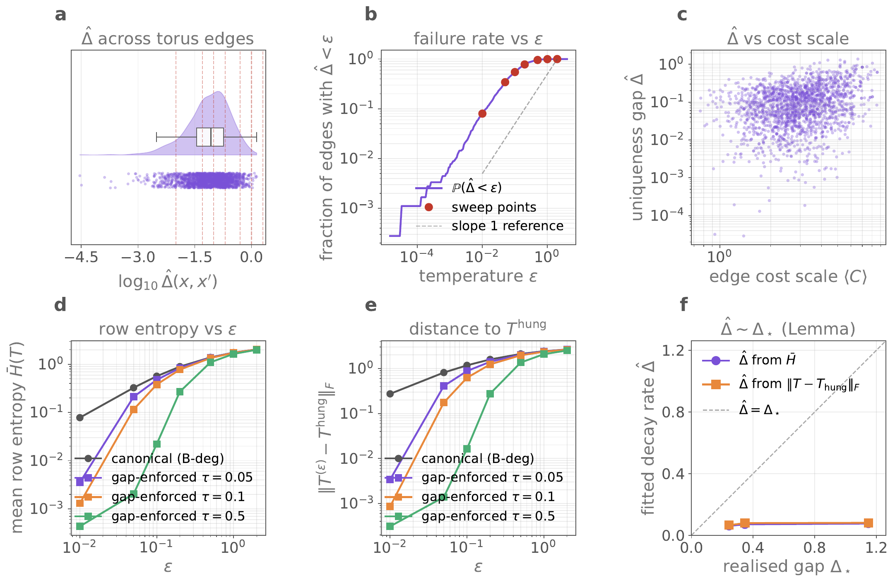
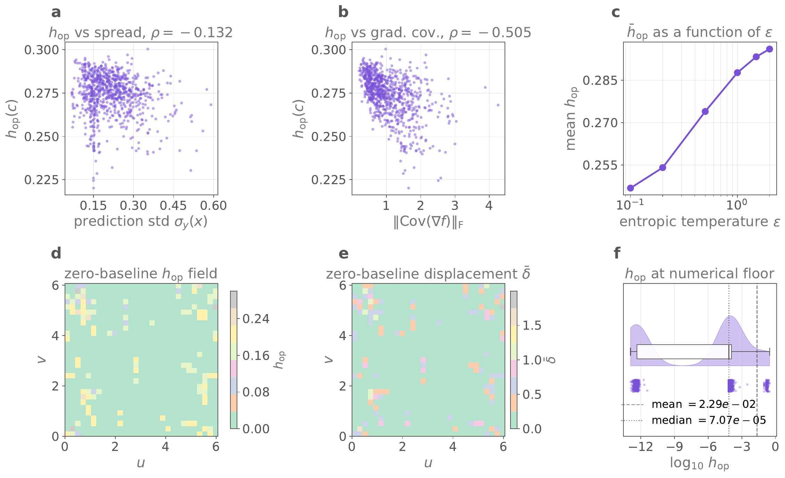
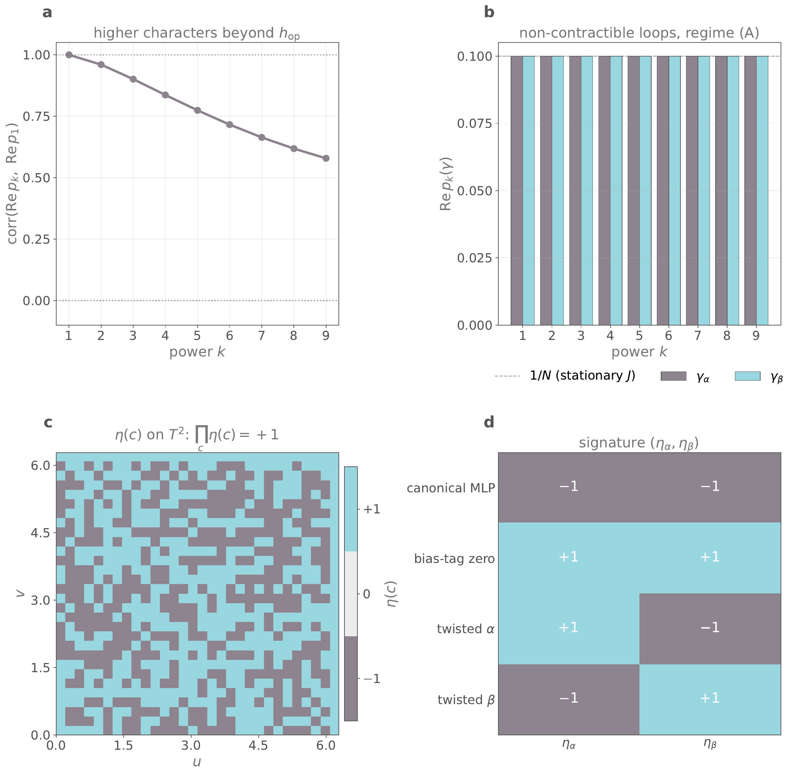

Numerics
2025 to 2026
A Stokes law for connections that permute
Put an unordered set of N things at every point of a surface, connect neighbouring sets by matching each thing to its nearest counterpart, and carry the set around a closed loop. It comes back permuted. This entry is about that permutation, about the theorem that relates the permutation on a boundary to the permutations inside it, and mostly about the parts that do not appear in a paper. The same structure turned up first in an ensemble of neural networks and later in the band structure of a non-Hermitian crystal, which is the part worth telling.
The fibre that has no labels
A vector bundle attaches a vector space to each point of a space, and the structure group is a group of invertible matrices. The object here attaches instead a set of \(N\) elements with no order among them, and the structure group is the symmetric group \(\SN\). Nothing distinguishes element three from element seven. Any labelling is a choice made at one point and propagated outward, and whether that propagation is consistent is the entire question.
Take a graph \(G\) whose vertices are points of the surface and whose edges join neighbours. On each edge, match the \(N\) elements at one end to the \(N\) elements at the other by whatever notion of nearness the problem provides. The match is a permutation \(T_{\alpha\beta} \in \SN\), and the family \(\{T_{\alpha\beta}\}\) is a discrete connection. Composing along a closed loop gives the holonomy.
The assignment \([\gamma]\mapsto\Hol_\gamma\) is a representation \(\rho\) of the fundamental group of the graph into \(\SN\). Conjugation by a relabelling at the basepoint changes \(\Hol_\gamma\) but not its conjugacy class, and the class of a permutation is its cycle type. Two functions read the cycle type off. The character spectrum records it in full, and the sign records only its parity.
The theorem is that the holonomy of a boundary is the ordered product of the holonomies of the faces it encloses, each conjugated by the transport from the basepoint to that face.
Two consequences follow from applying \(\eta\) to both sides, and both are cheap to state and awkward to arrive at. On a closed surface every edge is traversed twice in opposite directions, the conjugations cancel under the sign, and what survives is \(\prod_c \eta(c) = +1\). Faces with odd holonomy come in pairs. On the torus the two non-contractible loops carry a pair of signs \((\eta_\alpha, \eta_\beta)\) that no contractible loop can detect, a class in \(H^1(T^2,\mathbb{Z}_2)\) taking four values.
The conjugation factors \(g_c\) are the part that costs the work. They depend on a spanning tree, they do not commute, and the ordering of the product is fixed by the tree rather than being free. Most of the length of the proof is bookkeeping about which corner of which face the transport lands on.
Where it came from
The starting point was not topology. It was an ensemble of ten small multilayer perceptrons, three inputs and ten hidden units each, trained on the same scalar field over a torus embedded in \(\mathbb{R}^3\).
Ten models, ten predictions at every point, and no reason for model three at one point to correspond to model three at the next. The training seeds differ, the initialisations differ, and the index a model carries in a Python list is an accident of the loop that created it. The ensemble at each point is exactly an unordered fibre of size ten.
The question that started it was practical. If neighbouring predictions are matched by agreement rather than by list index, does the matching close up around a loop. The answer was no, not always, and the failures were not noise. They were concentrated, reproducible, and they organised themselves into something with a parity.
From there the argument went in two directions. The abstract version replaced the ensemble with an empirical measure on \(N\) states at each vertex of a 2-complex, coupled neighbours by entropic optimal transport, and proved the Stokes law in that generality. That version is the first manuscript, and it says nothing about physics.
The second direction was the reframing that made the work matter. A non-Hermitian Bloch Hamiltonian \(H(k)\) has \(N\) eigenvalues at each crystal momentum, and the Brillouin zone of a two-dimensional crystal is a torus. At an exceptional point two or more eigenvalues coalesce, the matrix becomes defective, and no eigenbasis exists [3, 4, 5]. Berry's construction needs an eigenbasis and therefore does not apply [7]. What does survive is precisely the unordered fibre. Carrying eigenstates around a loop that encircles an exceptional point of order \(m\) returns them cyclically permuted by an \(m\)-cycle, and the ensemble machinery transfers without modification.
The two statements are the same theorem. The closed-surface sum rule becomes the statement that second-order exceptional points occur in even numbers on any closed surface, a conservation law with no Hermitian analogue. The \(\mathbb{Z}_2\times\mathbb{Z}_2\) signature becomes a classification of non-Hermitian band structures into four phases by the parity of the band braid along each non-contractible cycle. A control loop around a single second-order exceptional point in a photonic lattice with balanced gain and loss produces a complete population exchange between the two coalescing modes, which is a measurement that existing platforms can already perform [6, 8, 9].
An ensemble of neural networks does not know it is doing band theory. That the same permutation bookkeeping governs both is the reason the second manuscript exists, and the ensemble is what made the structure visible in the first place, since it could be perturbed at will in a way a crystal cannot.
Getting a permutation out of a computer
A permutation is a discrete object and a computer produces continuous ones. The route taken is to define a cost between the two fibres at the ends of an edge, solve a transport problem at temperature \(\varepsilon\), and let \(\varepsilon\) fall.
The cost is the first place where the geometry enters. Matching predictions by value alone is too weak, because ten models fitting the same field agree on value almost everywhere and the matching becomes arbitrary. Matching by value and gradient together is far more rigid. The gradient lives in the tangent plane, and the tangent plane at one point is not the tangent plane at its neighbour, therefore the gradient has to be rotated before it can be compared. The rotation used is the orthogonal matrix closest to the change of frame, obtained from a singular value decomposition with a determinant repair to keep it in \(\mathrm{SO}(2)\).
def rotation_SO2_closest(R):
U, _, Vt = np.linalg.svd(R)
Rso = U @ Vt
if np.linalg.det(Rso) < 0: # reflection, not a rotation
U[:, 1] *= -1
Rso = U @ Vt
return Rso
def jet_costm(fibre_A, fibre_B, s_y, s_g, R_AB):
G_B_rot = fibre_B[:, 1:3] @ R_AB.T # gradients into A's frame
dY = (fibre_A[:, None, 0] - fibre_B[None, :, 0]) / s_y
dG = (fibre_A[:, None, 1:3] - G_B_rot[None, :, :]) / s_g
return dY**2 + np.sum(dG**2, axis=2)The scales s_y and s_g are not cosmetic. Value and gradient carry different units, and the matching that results depends on their ratio. Getting this wrong produces a connection that looks fine and means nothing.
With a cost matrix in hand the transport is a Sinkhorn iteration in log space, which returns a doubly stochastic matrix rather than a permutation [1, 2].
At large \(\varepsilon\) the rows are broad and the transport is a probabilistic band coupling. As \(\varepsilon\) falls the rows concentrate, and in the limit \(T^{(\varepsilon)}\) becomes the permutation matrix that the Hungarian algorithm returns on the same cost. Birkhoff's theorem guarantees the vertices of the doubly stochastic polytope are the permutations, and the entropic relaxation slides along the interior towards one of them.
The holonomy is then four transports composed around a unit square, with transposes because the transport acts on the right.
for (ia, ja), (ib, jb) in zip(loop_indices[:-1], loop_indices[1:]):
A = fibre_jets(ia, ja, predictions, jacobians, n_eval)
B = fibre_jets(ib, jb, predictions, jacobians, n_eval)
R_AB = rotation_AB(ia, ja, ib, jb, E_all, n_eval)
C = jet_costm(A, B, s_y, s_g, R_AB)
Ts.append(transfer_operator_entropic(C, eps=eps))
H = Ts[-1].T @ Ts[-2].T @ Ts[-3].T @ Ts[-4].T
h_fro = np.linalg.norm(H - np.eye(N), ord='fro') / NRunning the same plaquette through the Hungarian route instead of the entropic one gives the exact permutation, and the two agree once \(\varepsilon\) is small enough. Which value of \(\varepsilon\) counts as small enough is the subject of the next section, and it is not a constant.
What the diagnostics actually said
The invariants are the presentable result. The diagnostics are where the time went, and three of them changed what the manuscript claims.
The rate depends on a gap nobody controls
Concentration as \(\varepsilon\to 0\) is fast when the optimal assignment is unique by a clear margin and slow when it is nearly degenerate. The margin is the uniqueness gap \(\hat\Delta\), the difference between the best assignment and the next best, and it is a property of the data rather than a parameter. Its distribution across the edges of the torus is broad, spanning four orders of magnitude, with a tail reaching \(10^{-4}\). Edges in that tail need an \(\varepsilon\) smaller than the gap before their transport resembles a permutation at all.

Panel f is the one worth dwelling on. The lemma predicts the decay rate is set by the gap, and the fitted rate sits far below the diagonal at every gap tested. The bound holds in direction and is loose in magnitude. Stating the lemma as an asymptotic rate rather than as a usable estimate is a consequence of that panel, and the temptation to quote the bound as though it were tight is exactly what the figure was made to resist.
The holonomy has a numerical floor
Measuring how far the loop transport is from the identity produces a number that is never exactly zero. The distribution of \(\log_{10} h_{\mathrm{op}}\) over the torus is bimodal, with one mode at \(10^{-12}\), which is floating point zero, and another several orders of magnitude above it. The mean is \(2.29\times 10^{-2}\) and the median is \(7.07\times 10^{-5}\), a separation of more than two orders of magnitude between the two statistics.

A mean is the wrong statistic for a quantity whose null value is machine epsilon, and any threshold that separates a genuine permutation from floating point residue has to be chosen against that bimodality rather than against the mean. Panels d and e say the same thing spatially, since the nontrivial faces are a sparse minority and the rest of the torus is flat.
Relabelling has to change nothing
The strongest test available costs almost nothing to run. Apply an independent random permutation to the ensemble indices at every vertex, which is a gauge transformation of the connection, recompute everything, and require the diagnostics to be unchanged. Any quantity that moves under this test is a property of the Python list ordering and not of the field.
def randomly_permute_ensemble(predictions, jacobians, rng=None):
for k in range(n_points):
perm = rng.permutation(n_models) # independent at every vertex
preds_perm[:, k] = predictions[perm, k]
jacs_perm[:, k, :] = jacobians[perm, k, :]
return preds_perm, jacs_permThis test caught a first version of the barycentric displacement that quietly assumed a common ordering across vertices. It agreed with the correct value on unpermuted data and disagreed after relabelling, which is the worst kind of error to have, since it is invisible in every run where the bug does not matter.
The four classes are reachable
A classification with four values is worth little if a model only ever realises one of them. The ensemble reaches all four, by construction rather than by luck. A plain ensemble lands in \((-1,-1)\), zeroing the bias tags gives \((+1,+1)\), and twisting the labelling along one non-contractible seam or the other gives the two mixed classes.

Panel a is the argument for carrying the whole character spectrum rather than the first character alone. If the higher characters were determined by \(p_1\) the correlation would stay at unity, and it falls steadily. Newton's identities turn the spectrum into a finite test on the \(r = |E| - |V| + 1\) generators of the fundamental group, which is what makes the test finite rather than a sum over all loops.
Where it stands
Two manuscripts exist. The first states the Stokes law for \(\SN\)-valued connections on 2-complexes and proves it in the abstract, with the entropic construction and the convergence rates. The second keeps the same theorem and rebuilds the surrounding argument around non-Hermitian band theory, with a non-Hermitian Lieb model whose exceptional points are located in closed form and whose seam twists realise all four classes. The second is under review at SciPost Physics.
The reframing cost a figure set. The band-theory manuscript is analytic throughout, with the worked examples reproducible in closed form from the stated Hamiltonians, and the ensemble figures shown above belong to the first manuscript. They are the evidence that the construction survives contact with real data, which the analytic version does not need and which is the more interesting half to look at.
What remains open. The conjugation factors \(g_c\) depend on a spanning tree, and no canonical choice presents itself, which makes the ordered product awkward to state and awkward to compute for large complexes. The convergence rate is proved but loose, as Fig. 1f shows. The extension past the torus to higher genus is written out but untested numerically. The predicted observable rests on a quasistatic control loop, and real encircling experiments are dynamical, where non-adiabatic transitions and the chirality of the traversal enter in ways this treatment does not cover [6].
Code
The reproducibility artifact is self-contained. Four compute scripts emit caches, five figure scripts consume them, and core.py holds the ensemble training, the transport operators and the loop holonomy. A shipped ensemble cache avoids a five minute cold start, and deleting it forces regeneration. Total wall time on a laptop is ten minutes. Everything is seeded, with agreement to three significant figures across x86-64 and arm64.
- M. Cuturi, Sinkhorn distances, lightspeed computation of optimal transport, Advances in Neural Information Processing Systems 26, 2292 (2013).
- G. Peyré, M. Cuturi, Computational optimal transport, Foundations and Trends in Machine Learning 11, 355 (2019).
- T. Kato, Perturbation theory for linear operators, Springer (1995).
- W. D. Heiss, The physics of exceptional points, J. Phys. A 45, 444016 (2012).
- E. J. Bergholtz, J. C. Budich, F. K. Kunst, Exceptional topology of non-Hermitian systems, Rev. Mod. Phys. 93, 015005 (2021).
- J. Doppler et al., Dynamically encircling an exceptional point for asymmetric mode switching, Nature 537, 76 (2016).
- M. V. Berry, Quantal phase factors accompanying adiabatic changes, Proc. R. Soc. A 392, 45 (1984).
- R. El-Ganainy et al., Non-Hermitian physics and PT symmetry, Nature Physics 14, 11 (2018).
- M.-A. Miri, A. Alù, Exceptional points in optics and photonics, Science 363, eaar7709 (2019).
- G. Birkhoff, Tres observaciones sobre el álgebra lineal, Univ. Nac. Tucumán Rev. A 5, 147 (1946).
- E. H. Lieb, Two theorems on the Hubbard model, Phys. Rev. Lett. 62, 1201 (1989).